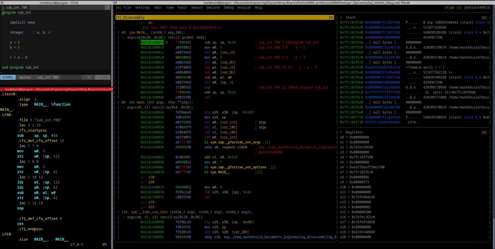

Fortran - ARM 64-Bit Platform - Subtract Two Integers#
{kind=link}
Introduction#
In this section we will be disassembling simple binaries generated by the Fortran high-level language compiled for the 64-bit ARM platform.
Project code for this section is contained in my markkhusid/Disassembling-Binaries.
The program sub_int.f08#
program sub_int
implicit none
integer :: a, b, c
a = 5
b = 3
c = a - b
end program sub_int
The program displays the contents of the program sub_int.f08. The program creates three integers: a, b, and c. a is assigned the value of 5, b is assigned the value of 3, and c is assigned the result of the operation a - b.
The program is obviously very simple, with no inputs and outputs. The idea is to generate the binary and look at the disassembly to learn about the workings of the 64-bit ARM processor platform.
The chosen test system is my trusty Samsung Chromebook Plus V2, which has a 64-bit ARMv8 processor. This is a very convenient platform for this exercise due to its availability and ease of access from multiple remote systems via SSH.
The program is compiled with the GNU Fortran compiler, gfortran, which is available on the ARM platform. The program is compiled with debugging information using the -ggdb3 option, which allows us to debug the program in GDB and see the source code interspersed with the assembly instructions.
The program is compiled with:
$ gfortran -ggdb3 sub_int.f08 -o sub_int_Fortran_aarch64_ggdb3
For general edification, we also have gfortran produce generic assembly with the -S option, an object file with the -o option, and object dumps of the object and executable files.
The generic assembly is generated by using the -S (assembly) option:
$ gfortran -S -ggdb3 sub_int.f08 -o sub_int.s
The object file is generated by using the -c (compile) option:
$ gfortran -c -ggdb3 sub_int.s -o sub_int.o
The objdump files are generated by using the following command and options:
$ objdump -x -D -S -s -g -t sub_int.o > objdump_of_dot_o.txt
$ objdump -x -D -S -s -g -t sub_int_Fortran_aarch64_ggdb3 > objdump_of_dot_exe.txt
A rundown of the objdump options is shown here:
$objdump
Usage: objdump <option(s)> <file(s)>
Display information from object <file(s)>.
At least one of the following switches must be given:
-a, --archive-headers Display archive header information
-f, --file-headers Display the contents of the overall file header
-p, --private-headers Display object format specific file header contents
-P, --private=OPT,OPT... Display object format specific contents
-h, --[section-]headers Display the contents of the section headers
-x, --all-headers Display the contents of all headers
-d, --disassemble Display assembler contents of executable sections
-D, --disassemble-all Display assembler contents of all sections
--disassemble=<sym> Display assembler contents from <sym>
-S, --source Intermix source code with disassembly
--source-comment[=<txt>] Prefix lines of source code with <txt>
-s, --full-contents Display the full contents of all sections requested
-g, --debugging Display debug information in object file
-e, --debugging-tags Display debug information using ctags style
-G, --stabs Display (in raw form) any STABS info in the file
-W, --dwarf[a/=abbrev, A/=addr, r/=aranges, c/=cu_index, L/=decodedline,
f/=frames, F/=frames-interp, g/=gdb_index, i/=info, o/=loc,
m/=macro, p/=pubnames, t/=pubtypes, R/=Ranges, l/=rawline,
s/=str, O/=str-offsets, u/=trace_abbrev, T/=trace_aranges,
U/=trace_info]
Display the contents of DWARF debug sections
-Wk,--dwarf=links Display the contents of sections that link to
separate debuginfo files
-WK,--dwarf=follow-links
Follow links to separate debug info files (default)
-WN,--dwarf=no-follow-links
Do not follow links to separate debug info files
-L, --process-links Display the contents of non-debug sections in
separate debuginfo files. (Implies -WK)
--ctf[=SECTION] Display CTF info from SECTION, (default `.ctf')
--sframe[=SECTION] Display SFrame info from SECTION, (default '.sframe')
-t, --syms Display the contents of the symbol table(s)
-T, --dynamic-syms Display the contents of the dynamic symbol table
-r, --reloc Display the relocation entries in the file
-R, --dynamic-reloc Display the dynamic relocation entries in the file
@<file> Read options from <file>
-v, --version Display this program's version number
-i, --info List object formats and architectures supported
-H, --help Display this information
In our case, we want -x (all headers), -D (disassemble all), -S (display source code with assembly), -s (full contents of all sections), -g (debug info), and finally, -t (display contents of the symbol tables).
We will now disassemble this program on the 64-bit ARM platform and step through the assembly instructions.
Disassembling sub_int_Fortran_aarch64_ggdb3#
When we look at the executable’s objdump, we notice that there are two functions of interest, one is main, and the other is MAIN__. The Fortran compiler sets up the program arguments and options in main, while the actual program is contained within MAIN__ (that is capital MAIN followed by two underscores).
The following text from the executable’s objdump illustrates this:
Disassembly of section .text:
0000000000000814 <MAIN__>:
814: d10043ff sub sp, sp, #0x10
818: 528000a0 mov w0, #0x5 // #5
81c: b9000fe0 str w0, [sp, #12]
820: 52800060 mov w0, #0x3 // #3
824: b9000be0 str w0, [sp, #8]
828: b9400fe1 ldr w1, [sp, #12]
82c: b9400be0 ldr w0, [sp, #8]
830: 4b000020 sub w0, w1, w0
834: b90007e0 str w0, [sp, #4]
838: d503201f nop
83c: 910043ff add sp, sp, #0x10
840: d65f03c0 ret
0000000000000844 <main>:
844: a9be7bfd stp x29, x30, [sp, #-32]!
848: 910003fd mov x29, sp
84c: b9001fe0 str w0, [sp, #28]
850: f9000be1 str x1, [sp, #16]
854: f9400be1 ldr x1, [sp, #16]
858: b9401fe0 ldr w0, [sp, #28]
85c: 97ffffa5 bl 6f0 <_gfortran_set_args@plt>
860: 90000000 adrp x0, 0 <_init-0x660>
864: 91248001 add x1, x0, #0x920
868: 528000e0 mov w0, #0x7 // #7
86c: 97ffff9d bl 6e0 <_gfortran_set_options@plt>
870: 97ffffe9 bl 814 <MAIN__>
874: 52800000 mov w0, #0x0 // #0
878: a8c27bfd ldp x29, x30, [sp], #32
87c: d65f03c0 ret
Explaining the Dissassembly by ChatGPT 4o#
This is AArch64 (ARM 64-bit) disassembly output for a Fortran program that performs a simple integer subtraction. We’ll break down the code into detailed steps and reconstruct the equivalent Fortran source.
Reconstructed Fortran Code#
program subtract_int
implicit none
integer :: a, b, c
a = 5
b = 3
c = a - b
end program subtract_int
Disassembly Analysis#
We’ll start with the MAIN__ subroutine, which is generated for the Fortran program body.
Function: MAIN__#
0000000000000814 <MAIN__>:
This is the entry point for the Fortran program (not to be confused with the main function that wraps it for execution).
1. Stack Setup#
814: d10043ff sub sp, sp, #0x10
Allocate 16 bytes of stack space.
sp(stack pointer) is decremented to make room for local variables (a,b,c).
2. a = 5#
818: 528000a0 mov w0, #0x5 // w0 = 5
81c: b9000fe0 str w0, [sp, #12] // store at offset +12 (a)
w0is a 32-bit register.movloads immediate5intow0.strstoresw0at[sp + 12]→ this is variablea.
3. b = 3#
820: 52800060 mov w0, #0x3 // w0 = 3
824: b9000be0 str w0, [sp, #8] // store at offset +8 (b)
Load
3intow0.Store into
[sp + 8]→ this is variableb.
4. c = a - b#
828: b9400fe1 ldr w1, [sp, #12] // load a → w1
82c: b9400be0 ldr w0, [sp, #8] // load b → w0
830: 4b000020 sub w0, w1, w0 // w0 = a - b
834: b90007e0 str w0, [sp, #4] // store result (c) at [sp + 4]
Step-by-step:
Load
afrom[sp + 12]→w1 = a = 5Load
bfrom[sp + 8]→w0 = b = 3sub w0, w1, w0computesw0 = w1 - w0 = 5 - 3 = 2Store result in
cat[sp + 4]
5. Function Epilogue#
838: d503201f nop // no-op (could be alignment or placeholder)
83c: 910043ff add sp, sp, #0x10 // restore original stack pointer
840: d65f03c0 ret // return from MAIN__
Stack pointer is restored to original value.
Return from function.
Stack Layout in MAIN__#
Offset from |
Variable |
Description |
|---|---|---|
|
|
|
|
|
|
|
|
|
Function: main#
0000000000000844 <main>:
This is the C-style entry point, which sets up the environment and invokes the Fortran MAIN__.
1. Stack Frame Prologue#
844: a9be7bfd stp x29, x30, [sp, #-32]!
848: 910003fd mov x29, sp
Store
x29(frame pointer) andx30(return address) to stack.Update
x29to point to the current stack frame.
2. Store argc and argv#
84c: b9001fe0 str w0, [sp, #28] // argc
850: f9000be1 str x1, [sp, #16] // argv
Store command-line arguments to local stack for runtime use.
3. Pass Args to Fortran Runtime#
854: f9400be1 ldr x1, [sp, #16] // load argv
858: b9401fe0 ldr w0, [sp, #28] // load argc
85c: 97ffffa5 bl 6f0 <_gfortran_set_args@plt>
Call
_gfortran_set_args(argc, argv)to initialize argument parsing for Fortran.
4. Set Fortran Runtime Options#
860: 90000000 adrp x0, 0 <_init-0x660> // load page base address
864: 91248001 add x1, x0, #0x920 // offset address into .rodata or similar
868: 528000e0 mov w0, #0x7 // set options flag
86c: 97ffff9d bl 6e0 <_gfortran_set_options@plt>
Configures I/O formatting, IEEE flags, etc., via
_gfortran_set_options.
5. Call the Fortran Program (MAIN__)#
870: 97ffffe9 bl 814 <MAIN__>
Call the actual Fortran logic for subtraction.
6. Exit the Program#
874: 52800000 mov w0, #0x0 // return 0 (success)
878: a8c27bfd ldp x29, x30, [sp], #32
87c: d65f03c0 ret
Set exit code to 0.
Restore saved
x29andx30.Return to operating system.
✅ Summary#
This disassembly is from a Fortran program that performs:
a = 5
b = 3
c = a - b
Operations Performed:#
Step |
Operation |
Value |
|---|---|---|
1 |
|
|
2 |
|
|
3 |
|
|
All variables are stored on the stack and the arithmetic is performed using 32-bit registers (w0, w1). The actual program does not output anything—it just computes and stores the result.
Let me know if you want the binary layout, memory diagram, or the C equivalent.
Explaining the Disassembly by Grok 4#
Overview of the Disassembly#
This disassembly is in ARM64 (AArch64) assembly language, which is the 64-bit instruction set used by ARM processors (e.g., in modern Apple Silicon, some mobile devices, and servers). It appears to be the machine code output from a compiled Fortran program, as indicated by the function names (MAIN__ is a common Fortran compiler-generated name for the user-defined main body) and calls to GNU Fortran (gfortran) runtime functions like _gfortran_set_args and _gfortran_set_options. These are part of the Fortran runtime library, suggesting this binary was compiled from a simple Fortran source code.
The disassembly has two main parts:
**
MAIN__at address0x0000000000000000(likely the Fortran program’s core logic): A subroutine that allocates stack space, initializes two integer variables to 5 and 3, subtracts their difference (5 - 3 = 2), stores the result, and returns without further action (e.g., no output or side effects visible here).**
mainat address0x0000000000000000(the C-style entry point): The program’s entry point, which sets up the stack, passes command-line arguments to the Fortran runtime, configures runtime options, callsMAIN__, and exits cleanly with status 0.
This code does not perform any input/output or complex operations—it’s essentially a “hello world”-level computation that computes but discards a result. In a real Fortran context, it might be a minimal example or part of a larger program where the result could be used elsewhere, but here it’s standalone and returns without printing.
I’ll explain each instruction in detail, including:
Opcode and operands: What the instruction is.
Semantics: What it does to registers, memory, or control flow.
Context: How it fits into the function and overall program.
Binary encoding: The hex bytes (as given) for reference.
I’ll group related instructions for clarity and note ARM64 conventions:
Registers:
x0-x30are 64-bit general-purpose;w variants (e.g.,w0`) access the lower 32 bits (for ints).Stack: Grows downward;
spis the stack pointer.Calling convention: AArch64 ABI: Parameters in
x0-x7, return inx0, frame pointer inx29, link register inx30.Immediates:
#0x5means literal value 5.Addresses are absolute but may be rebased in the binary.
Detailed Explanation of MAIN__ (Fortran Program Logic)#
This function allocates 16 bytes on the stack for local variables (likely three 4-byte integers), performs a subtraction, and cleans up. It corresponds to Fortran code like:
INTEGER :: var1 = 5
INTEGER :: var2 = 3
INTEGER :: result
result = var1 - var2 ! Computes 2, but does nothing with it
The nop is likely compiler-inserted for alignment or optimization.
**
814: d10043ff sub sp, sp, #0x10
Binary:d1 00 43 ff
Semantics: Subtracts the immediate value0x10(16 in decimal) from the stack pointer (sp), effectively allocating 16 bytes of stack space for local storage. The result is written back tosp. In ARM64, stack allocation is manual; this creates a small frame for variables (sp+4, sp+8, sp+12) and possibly alignment (stacks must be 16-byte aligned).
Context: Standard function prologue. The 16-byte size is minimal; 12 bytes for three 32-bit ints, padded to 16 for alignment. After this,sppoints to the new stack frame base.818: 52 80 00 a0 mov w0, #0x5
Binary:52 80 00 a0(encoded as528000a0in some notations, but as given).
Semantics: Moves the immediate value5(0x5) into the lower 32 bits of registerx0(denoted asw0for 32-bit view). The upper 32 bits ofx0are implicitly zeroed. This is a “move immediate” instruction.
Context: Initializes a temporary register with the constant 5, which will be stored as the first variable (var1in my Fortran example).81c: b9000fe0 str w0, [sp, #12]
Binary: Stores the 32-bit value inw0(5) into memory at addresssp + 12.stris “store register”.
Semantics: Writes to the stack location reserved for the first variable. Stack offsets are relative to currentsp.
Context: Saves the value 5 to a local variable (e.g.,var1 = 5).820: 52800060 mov w0, #0x3
Binary:52000000000060, but given as52800060.
Semantics: Moves immediate3intow0, overwriting the previous value (5).
Context: Initializes temporary for the second variable (var2 = 3).824: b9000be0 str w0, [sp, #8]
Semantics: Storesw0(3) atsp + 8.
Context: Saves the value 3 to the second stack location (e.g.,var2).828: b9400fe1 ldr w1, [sp, #12]
Binary:b9 40 0f e1
Semantics: Loads the 32-bit value from memory atsp + 12(which is 5) intow1.ldris “load register”.
Context: Retrievesvar1intow1for the upcoming subtraction (left operand).82c: b9400be0 ldr w0, [sp, #8]
Semantics: Loads fromsp + 8(3) intow0(right operand).
Context: Prepares the subtrahend.830: 4b000020 sub w0, w1, w0
**Binary:4b 00 00 20**Semantics**: Subtractsw0(3) fromw1(5), storing the result (2) inw0. This is integer subtraction without carry (no overflow check visible). **Context**: The core operation:result = var1 - var2. In Fortran, integers are typically 32-bit, matchingw` registers.834: b90007e0 str w0, [sp, #4]
Semantics: Storesw0(2) atsp + 4.
Context: Saves the result to the third stack location (e.g.,result). Note: The result is stored but never used or returned—typical of a computation without side effects.838: d503201f nop
Binary:d5 03 20 1f
Semantics: No operation—does nothing, just a placeholder that advances the program counter. Often inserted by compilers for instruction alignment (ARM64 prefers 4-byte alignment) or to pad for timing/branch targets.
Context: Likely compiler-generated; no functional purpose here. In some cases, it’s for debugging or to avoid hazards, but unnecessary in this simple sequence.83c: 910043ff add sp, sp, #0x10
Semantics: Adds0x10(16) back tosp, deallocating the stack frame and restoring the caller’s stack.
Context: Function epilogue—cleans up locals before returning.840: d65f03c0 ret
Semantics: Returns to the caller by jumping to the address in the link registerx30(set by the caller viabl). No return value is set, so it implicitly returns whatever is inx0(undefined here, but Fortran subroutines don’t return values like this).
Context: EndsMAIN__.
Detailed Explanation of main (Program Entry Point)#
This is the standard wrapper for Fortran programs compiled with gfortran. It handles C-style main(int argc, char** argv), initializes the Fortran runtime, calls the Fortran main body (MAIN__), and exits. Corresponds to the implicit “program” wrapper in Fortran.
844: a9be7bfd stp x29, x30, [sp, #-32]!
Semantics: “Store pair”: Subtracts 32 fromsp, then storesx29(frame pointer) andx30(link register) at the newsp. The!means pre-indexed with writeback.
Context: Prologue: Saves caller’s frame pointer and return address, allocates 32 bytes (for locals like argc/argv and alignment).848: 910003fd mov x29, sp
Semantics: Sets the currentspas the frame pointerx29for easy access to locals (e.g., [x29, #28] for offsets).
Context: Standard ABI for frame pointer setup.84c: b9001fe0 str w0, [sp, sp, #28]
Semantics: Storesw0(argc, the argument count from OS) atsp + 28(or [x29 - 4, since frame is 32).
Context: Saves argc locally.850: f9000be1 str x1, [sp, #16]
Semantics: Storesx1(argv, pointer to argument strings) atsp + 16.fprefix for 64-bit store.
Context: Saves argv.854: f9400be1 ldr x1, [sp, #16]
Semantics: Loads argv back intox1(preparing for call).
Context: Prepares argv as second argument for the upcoming runtime call.858: b9401fe0 ldr w0, [sp, #28]
Semantics: Loads argc intow0(first argument).
Context: Prepares argc for call.85c: 97ffffa5 bl 6f0 <_gfortran_set_args@plt>
Semantics: Branch with link to address0x6f0(PLT entry for_gfortran_set_args), which is a relative jump (signed 26-bit offset). Setsx30to return address. This calls the Fortran runtime to process command-line args for Fortran use.
Context: Initializes Fortran’s argument handling. PLT is Procedure Linkage Table for dynamic linking.860: 90000000 adrp x0, 0
Semantics: “Address relative to page”: Loads the base address of the current 4GB page (0 here, likely the data section) intox0.adrpfor page-aligned.
Context: Prepares a base address for the next instruction to compute an address.864: 91248001 add x1, x0, #0x920
Semantics: Adds offset0x920(2336 decimal) tox0, storing inx1. This computes the address of some global data (likely an options table for Fortran).
Context:x1now points to a constant array or structure for runtime configuration.868: 528000e0 mov w0, #0x7
Semantics: Moves 7intow0`.
Context: Argument for the options call, perhaps the number of options or a flags value (specific to gfortran).86c: 97ffff9d bl 6e0 <_gfortran_set_options@plt>
Semantics: Calls_gfortran_set_optionsat0x6e0via PLT, passingw0(7) andx1(options pointer).
Context: Configures Fortran runtime options, e.g., error handling, floating-point behavior, etc. The values are compiler defaults.870: 97ffffe9 bl 814 <MAIN__>
Semantics: CallsMAIN__at0x814(relative branch).
Context: Executes the Fortran program body.874: 52800000 mov w0, #0
Semantics: Setsw0to 0 (success exit code).
Context: Prepares program exit status for the OS.878: a8c27bfd ldp x29, x30, [sp], #32
Semantics: “Load pair”: Loadsx29andx30fromsp, then adds 32 tosp(post-index). Restores frame pointer, link register, and deallocates stack.
Context: Epilogue—cleans up.87c: d65f03c0 ret
Semantics: Returns to OS or caller), with exit code 0 inx0.
Overall Program Flow:
OS calls
mainwith argc/argv.mainsaves args, initializes Fortran runtime.Calls
MAIN__, which computes 5 - 3 = 2 (unused).mainreturns 0.
If run, the program does nothing visible—no print, just exits. To confirm or debug, you’d use tools like gdb or compile with -S for source mapping. This is typical unoptimized code; optimization might inline or remove the computation.